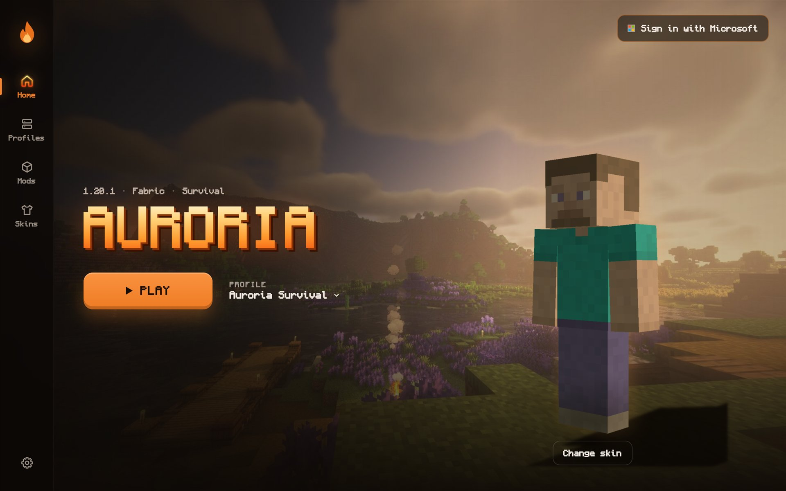
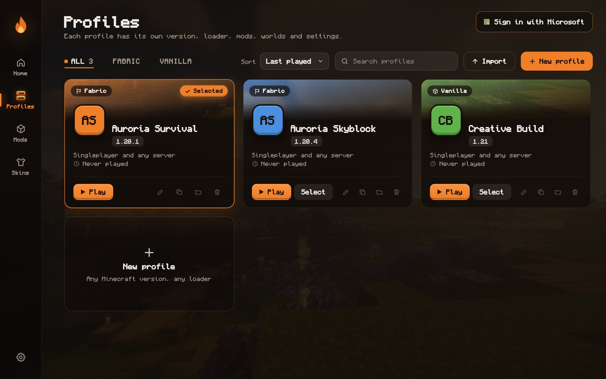
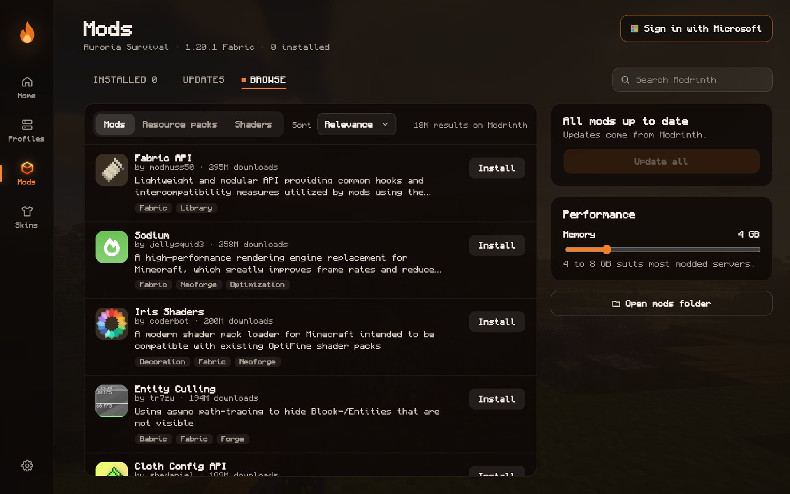
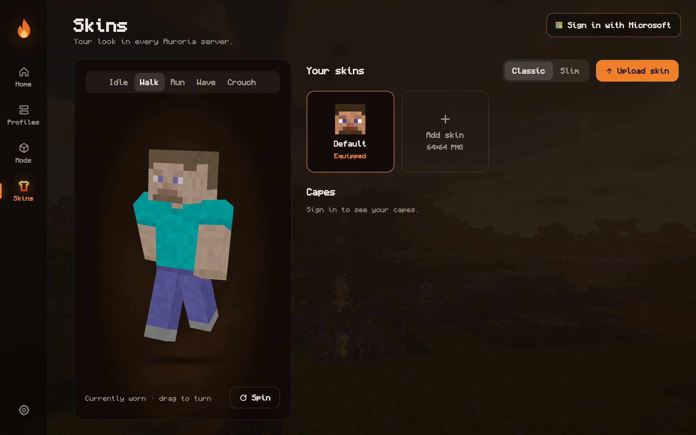

Profiles
Each setup gets its own Minecraft version, loader, memory, folder and icon. Switching never touches the others.
Free · Windows 10 and 11 · Java Edition
The Minecraft launcher that looks like it belongs in the game. Every version, every loader, one orange window.
Auroria.exe · 84 MB · no installer, no account on this site
drag to turn
The tour




Pick a profile, press PLAY. Auroria fetches Java, the game, libraries and assets on its own.
Features
Each setup gets its own Minecraft version, loader, memory, folder and icon. Switching never touches the others.
Bring profiles over from the Modrinth App, Prism, CurseForge or a .mrpack. Share yours as a .mrpack in one click.
Browse Modrinth inside the launcher. Install modpacks as new profiles. Required dependencies come along automatically.
Back up any world in one click and restore it later. Restoring saves the current world first, so nothing is lost.
See how long you played each profile. Save servers per profile with live ping and join them directly.
Copy key binds and video settings between profiles. Java is picked for you, or choose any install per profile.
Auroria checks for new versions on start and updates in one click, after verifying the download.
Catches outdated, conflicting and duplicate mods before the game does, with a Delete button on each one.
A live log page while the game runs. Search, filter by level, copy, save, or upload to mclo.gs and share a link.
Sign in with several Microsoft accounts and switch between them from the top corner.
Your character in real 3D with idle, walk, run, wave and crouch. Upload skins and switch capes.
One file. It opens fully drawn in about a second, with nothing popping in afterwards.
Versions and loaders
An example of the pre-launch check.
Download one file. Double-click it. That is the whole install.
Download Auroria.exeAll releases · Source on GitHub · Code signing policy · Privacy
Auroria.exe and open it.